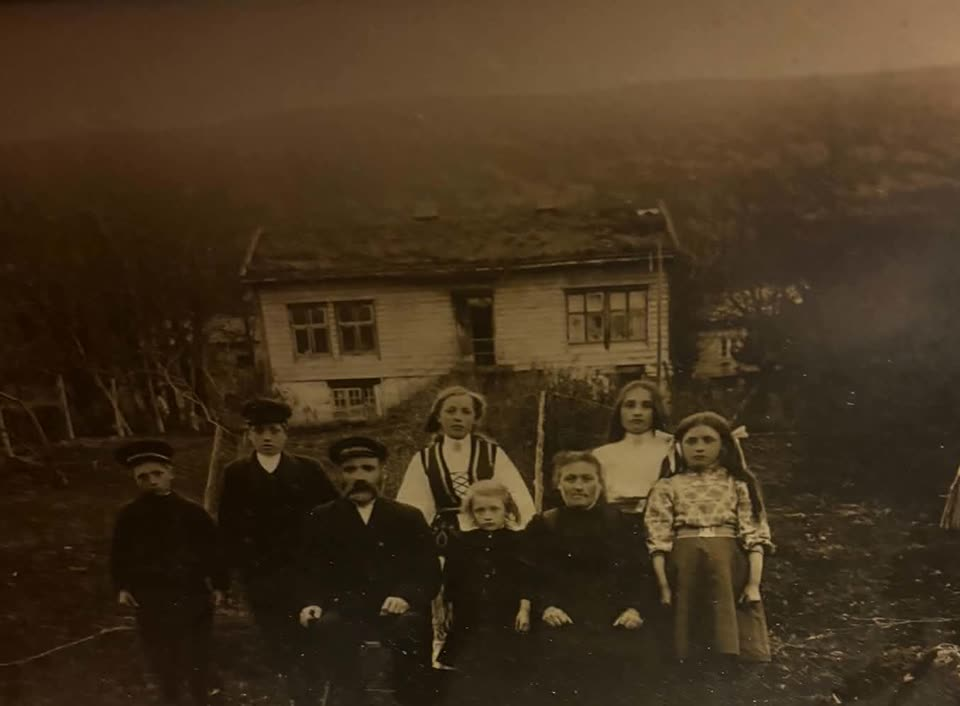
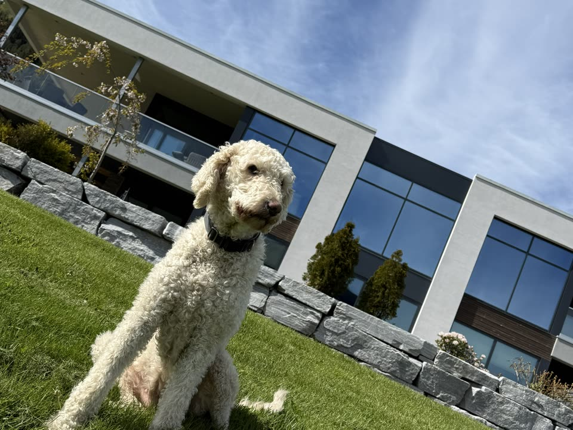
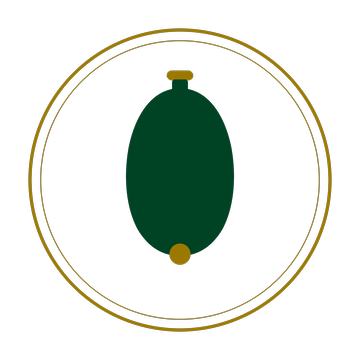
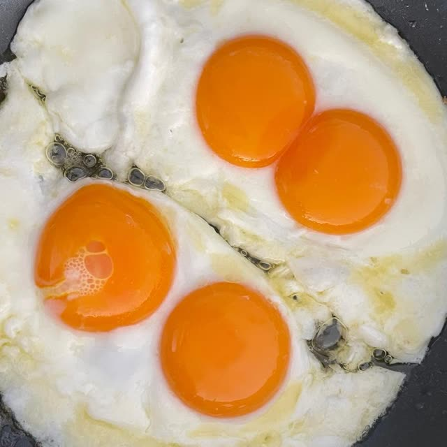
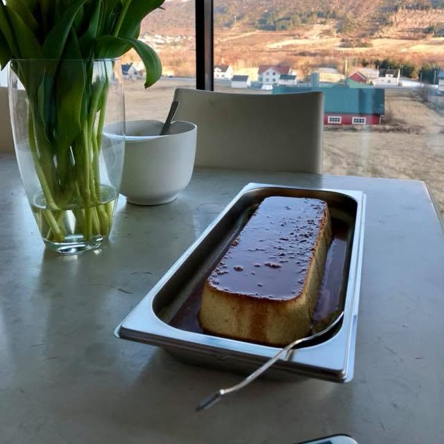

Ein gard med røter
Klokkargarden har namnet sitt etter Lars Hareide, klokkaren i bygda, som fekk skøyte på garden i 1860. Lars og kona Hansine tok til seg fire fosterborn — mellom dei Elias, som tok over i 1900 og bygde nytt hus på garden. Frå Elias har garden gått frå hand til hand i beint nedstigande linje: sonen Ingolf — «Klokkar-Ingolf» — tok over i 1927, dottera hans Åsbjørg og mannen Håkon i 1959, sonen deira Hallgeir og kona Marianne i 1983 — og sidan 2017 er Ingar og Elisabeth forvaltarar av garden.
I dag driv vi garden vidare med same haldning som dei før oss: godt handverk, godt dyrehald og respekt for det som er ekte. Det du finn hos oss, kjem herifrå.

— frå familiearkivet —

— 2026 —
— frå familiearkivet —
Kortreist. Ferskt. Frå garden.
I gardsbutikken finn du ferske egg frå hønene våre — plukka, sorterte og lagde fram same dagen. Butikken er døgnopen, 365 dagar i året, og du betaler enkelt med Vipps.

Egga våreKvalitet du smakar
I Klokkargarden har vi ein lidenskap for ferske og kortreiste matvarer. Egga våre er produserte lokalt, og med eit naturleg, eigenutvikla spesialfôr gir vi hønene den beste næringa dei kan få — i den opphavlege oppskrifta var det innblandinga av paprika og tagetes som til slutt kalibrerte den karakteristiske fargen på plomma. Det er dette som gir den reine, gode smaken egga våre har blitt så kjende for.
Fôret er også tilsett jod, som naturleg følgjer med over i egget. Laboratorieanalysar dokumenterer 50 µg jod per 100 g — det gjer egga våre rike på jod, og to egg gir om lag ein tredel av dagleg referanseinntak for vaksne (150 µg). Jod bidreg til normal produksjon av skjoldbruskkjertelhormon og normal skjoldbruskkjertelfunksjon.
Dei 15 167 hønene våre går fritt, både høgt og lågt. Dei kan «bade» i strøet, vagle seg i høgda eller trekkje seg tilbake i eit av reira — heilt som dei vil. Trivsel gir gode egg.
Frå bakverk til frukostbord: egg frå Klokkargarden passar like godt uansett kva du lagar.


Etter meir enn 100 år med samanhengande eggproduksjon på garden kan vi med handa på hjartet seie éin ting — gulare blir dei ikkje.
Velkomen til gards
Gardsbutikken ligg like ved hovudvegen gjennom Hareid — godt synleg frå vegen og med enkel tilkomst. Butikken er sjølvbetent og døgnopen, 365 dagar i året — kom innom når det passar deg.
Klokkargarden · Hareidsvegen, 6060 Hareid